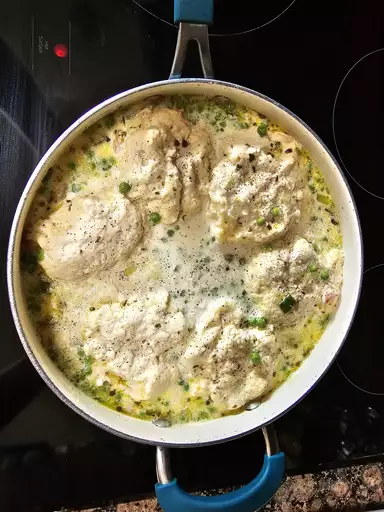

Instant Pot Chicken and Dumplings

Description
This Instant Pot chicken and dumplings recipe provides the richness of a long-simmered chicken stew without the fuss of using a whole chicken.
This compromise — using boneless skinless chicken thighs with bone-in chicken breast — gave me the richness of flavor and ease of preparation I was looking for. It's basically chicken pot pie made in a pressure cooker rather than an oven.
Ingredients
- ½ tablespoon olive oil
- 1 cup diced onion
- ½ cup diced carrot
- ½ cup diced celery
- 1 bay leaf
- 4 cups low-sodium chicken broth
- 1 pound boneless, skinless chicken thighs
- 1 pound bone-in chicken breasts, skin removed
Steps
- Pour olive oil into a multi-functional pressure cooker (such as an Instant Pot) and select the Sauté function. Cook and stir onion, carrot, celery, and bay leaf until vegetables are soft and onion has turned translucent, about 5 minutes.
- Add chicken broth, thighs, breasts, salt, thyme, marjoram, and black pepper. Close and lock the lid. Select high pressure according to manufacturer's instructions; set the timer for 9 minutes. Allow 10 to 15 minutes for pressure to build.
- Release pressure carefully using the quick-release method according to manufacturer's instructions, about 5 minutes. Carefully use tongs to remove chicken pieces to a large bowl to cool slightly; discard bay leaf.
- While chicken is cooling, mash butter with flour in a small bowl to make a smooth paste; set aside.
- Make dumplings: Combine flour, baking powder, and salt in a medium bowl. Cut in cold butter with 2 knives or a pastry blender until mixture resembles the texture of cornmeal. Stir in parsley and set aside.